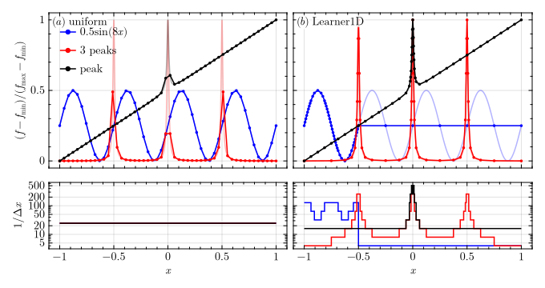

Learner1D
Adaptive sampling of a function on an interval; see also the overview.
The ask and tell loop
The learner decides where to sample; you decide how to evaluate the function.
using AdaptivePort
f(x) = sin(8x) + 0.2cos(23x)
learner = Learner1D(f; bounds=(-1, 1))
while !done(learner; tol=0.05) && npoints(learner) < 1000
points = ask(learner, 1)
isempty(points) && break
for x in points
tell!(learner, x, f(x))
end
end
data = result(learner) # (x = sorted Vector, y = values)The full script is examples/learner1d.jl; run it from the repository root with julia --project=. examples/learner1d.jl.
Uniform versus adaptive sampling of three sharp functions with the same number of evaluations (50), from examples/learner1d_plot.jl (run with julia --project=examples):

ask(learner, n)returns up tonnew points. The first points are the bounds; after that each point is the midpoint of the interval with the largest loss. The returned points are marked pending, so further calls never return them again, even before they are evaluated. Passtell_pending=falseto only peek.tell!(learner, x, y)records an evaluation. Points outside the bounds throw anArgumentError; a repeatedxis ignored and the first value is kept.loss(learner)is the largest interval loss, orInfwhile a bound is unevaluated.done(learner; tol)isloss(learner) <= tol.result(learner)returns(x, y)copies sorted byx;npoints(learner)counts them.
Vector-valued functions
Learner1D, Learner2D and LearnerND accept functions with several output components: pass vdim = M to the constructor (default 1, plain numbers). The values are then stored as NTuple{M,T} and tell! takes any iterable of length $M$ (a tuple, a vector, ...); a wrong length throws ArgumentError. vdim is fixed at construction.
f(x) = (sin(3x), tanh(60 * (x - 0.3)))
learner = Learner1D(f; bounds=(-1, 1), vdim=2)
for x in ask(learner, 5)
tell!(learner, x, f(x))
end
result(learner).y # Vector of 2-tuplesAll components share one set of points. The value scale is the largest range over the components (upstream does the same), so a component with a small range does not steer the sampling. Custom losses get tuples: Learner1D calls loss_per_interval(xs, ys) with ys a pair of NTuple{M} of scaled values, Learner2D calls loss_per_triangle(points, values, triangles) with raw NTuple{M} values (and scaled points), as for scalars. The default losses handle tuples. examples/vector.jl runs both learners with vdim = 2.
Refinement algorithm
Each interval between neighbouring evaluated points has a loss, by default the length of the straight segment joining its endpoints, in coordinates scaled by the width of the bounds and the observed range of y. This is upstream's default_loss. Steep regions have long segments and get refined first. The scaled y-range is updated lazily: all losses are recomputed only when the range more than doubles, as upstream does.
ask bisects the highest-loss interval, repeatedly. An interval that already contains pending points is split into sub-intervals that each carry a share of its loss proportional to their width. Ties go to the leftmost interval. Intervals narrower than about eps times the bounds have zero loss and are never split, so ask returns fewer points (eventually none) once the resolution is exhausted. A NaN or infinite interval loss is ranked by the interval's width instead.